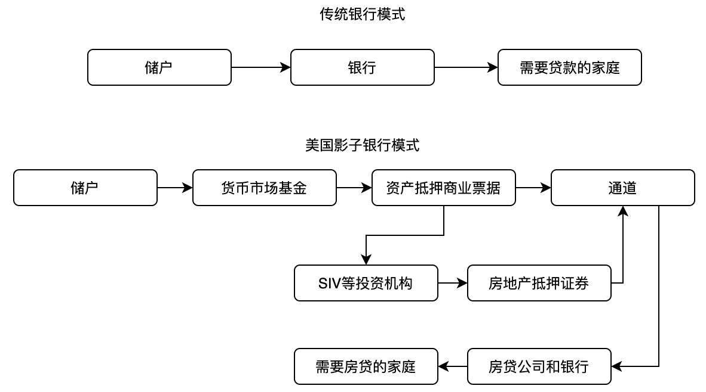
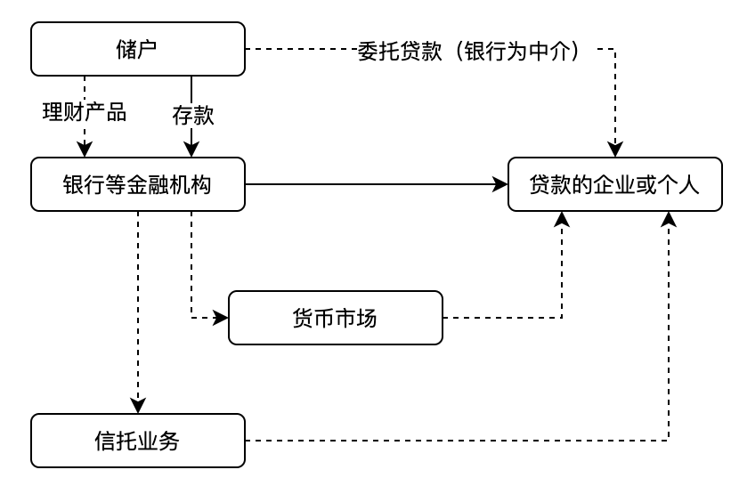

《理性的非理性金融》，王健、余剑峰著
作者
本书顾名思义，重点是分析金融市场中产生的看似非理性现象背后的深层原因以及政策干预之后的理性逻辑。作者是两位国内行为金融学大牛，分别是
- 香港中文大学深圳校区经管学院助理院长王健，中国金融40人青年成员，深圳高等金融研究院宏观金融稳定与创新中心主任，前美联储达拉斯联邦储备银行高级经济学家兼政策顾问。
- 清华大学五道口金融学院建树讲习教授余剑峰，美联储达拉斯联邦储备银行研究员，国家千人计划获得者，前香港中文大学深圳校区经管学院执行副院长。
533（五个章节，三个部分，解决三个问题）
本书虽然从目录上分为了五章，但是从内容上大致可以分为三个部分。
第一部分是一二章，主要涉及金融学的基本逻辑，分别是金融资产已经对资产进行定价的资产定价模型，同时还有由于信息不对称导致的金融诈骗和金融危机。
第二部分是第三四章，主要涉及行为学、心理学在金融市场中表现出来的非理性，以及如何从这些非理性中获得超额度收益。
第三部分为最后一章，主要介绍了美国的影子银行和中国的因子银行，最有引出作者认为的金融制度的顶层设计。
经济学上有一个非常著名的假设——理性经济人假设，意思是作为经济决策的主体，都是充满理性的，都希望自己的效用最大化。但在这种每个人都非常理性的选择下，还是会产生金融危机、过度杠杆和金融危机这些非理性的现象。所以本书的目的是要解决三个问题，分别是
- 很多看似不理性的投资行为，从行为心理学或进化论的角度看可能都是深层理性的。
- 即使单个投资者做出理性的决策，对金融市场而言可能也是非理性和非有效的。
- 只有理性看待金融市场中看似非理性的现象，才能更好的做出应对策略。
金融学的基本行为逻辑
金融是消费在时间上的转移
要理解金融学资产，先来看一下金融的历史。人们很早就出现了交易行为，甚至在远古时期人类虽然没有货币，但是已经开始了以物易物，这算是金融行为吗？其实非也，以物易物只是让消费品类发生了变化，并没有让消费在时间上发生转移。当消费在时间上发生转移，人们就会把当前消费不了的商品进行转换存储以备未来消费，比如今天打猎到野猪，可以让明天、后天没有打猎也能有得吃，这种储蓄行为才造就了金融。现在社会中的储蓄行为就更加普遍了。
储蓄行为造就了金融和金融市场
有储蓄行为后就衍生出了管理储蓄资金的机构，也就是今天的金融机构，他们的主要功能是为储蓄者的资金找到合适的贷款人，让资金高效的流动起来获得最佳收益。所以金融机构存在的基础就是如何从储蓄者和贷款人之间信息不对成的市场中低成本的收集和利用信息，让消费在时间上进行转移。
在现代信用社会，金融资产的本质是它背后所代表的契约关系，是未来能带来收益的权利。那这时候就会遇到收益的度量问题，比如今天张三打猎一头野猪，吃不完，给李四半头，换得一个贝壳，明天再用这个贝壳去找王五换半头野猪。另外如果冬天很多动物都冬眠，打猎变得很困难，这时候打猎到的野猪也会更加珍贵，相比平时应该需要价值更多的贝壳。这时候就需要大家都认可贝壳这种等价物。用什么价值的东西当成货币等价物其实并不重要，重要的是该等价物背后的信用价值。也就是尤瓦尔·赫拉利所说的共同想象。
比如以前有人认为美元之所以能成为国际货币，是因为美国的黄金储备，的确美国的黄金储备占世界全部黄金储备的70%，但是以2015年数据为例，相比美国18万亿的GDP而言，3500亿的黄金储备是远远不够的。所以支撑国际货币地位的不是黄金，是国家的科技和经济实力，以及维护货币代表的债权和债务关系的制度和能力。
金融资产定价
既然消费在时间上进行了转移，那么在转移之后可以获得多大的额外报酬，如何衡量资产的时间价值，这就涉及到资产定价，比如今天到100块借出去，一年之后应该还多少的问题。最简单的资产定价模型是净现值法，简单而言，就是按照一定的利率进行折现。当然这里有必要提一下有效市场假说，该假说认为投资者是不能获得超额收益的，只有通过承担更多的风险来获得更高的收益。只是现实生活中的市场并非完全有效的，市场中必须存在一定的无效性才能保证市场的充分性和有效性，换个角度考虑，市场必须存在一定的无效性，让在信息不对称的市场中的收集信息的人有利可图，才能保证有足够的人愿意去收集信息，并反映在市场价格上。
理性与非理性的泡沫
虽然理论上投资者计算资产价格时，应该是根据资产未来能带来的基本收益来判断的，但是短期内，很多投资者的判断往往受到心理因素影响，做出非理性的投资行为，比如非常典型的跟风现象。这种跟风甚至导致了20世纪30年代的美国大萧条，80年代的日本房地产泡沫，90年代美国的互联网泡沫。以及更早的17世纪荷兰的郁金香泡沫，郁金香泡沫时期一株郁金香的价格超过普通人十年的工资。中国也有类似郁金香的例子，20世纪80年代，中国东北地区一株君子兰十几万的天价，当时普通人月工资只有三四百元，君子兰被戏称为“绿色金条”。
历史上产生了这么多泡沫，那泡沫是怎么产生的呢，至少有两个条件：
- 未来存在不确定性，投资者无法确定未来资产的回报。
- 在相当长的时间内泡沫可以形成自我循环，越来越大。（从这个观点可以看出在无法卖空的股票市场中，市场的股票价格是反映乐观投资者观点的）
人性助推市场情绪
人类都有高估自己能力的心理偏差，甚至普林斯顿大学的沙因曼（Scheinkman）教授和熊伟教授把投资人过分自信的情况引入到投资人具有不同预期的模型中，发现这么模型可以很好的解释股票市场的泡沫现象。
一般情况下来说市场参与者这么多，肯定会有人看多，有人看空，如果市场预期没有反复加强，泡沫在没有形成一致性预期的时候不会变得很大。但实际情况是泡沫随处可见，为此索罗斯还专门提出了一个反射理论，他认为资产价格被市场中的乐观情绪推高后，会反过来推高经济的基本面。
既然情绪会扩大泡沫，同样，当泡沫破裂时，金融市场也会被过于悲观的情绪控制，造成金融挤兑现象，加速经济衰落。金融挤兑会造成整个金融市场崩溃，切断实体经济的资金供应链，导致经济暂时性的休克。
金融媒介提供期限错配和时间错配服务
金融市场的核心功能是金融媒介，就像银行的每次操作都是一种债权和债务关系的转移，这种金融媒介的关键任务是如何在追求最大回报率的同时，管理好自己资金的流动性和安全性。一般情况下流动性和安全性呈现反向关系，所以银行需要一种稳健平衡的资产结构。比如中国大型银行资产负债结构如下：
- 负债结构：65%来自储户存款，22%来自想央行或其他金融机构借款，13%为自有资金
- 资产结构：74%用于发放了贷款，20%放在流动性比较强的现金、储备金和债券上，6%用户办公楼、海外资产等其他资产
所以金融媒介主要职能为向存款人和贷款人提供了期限错配服务。帮助存款人管理资金，找到最好的投资渠道。
除了期限错配，金融媒介还提供时间错配服务，比如毕业生想要卖书和生活用品的时候找不到买家只能扔掉，新生想要买书和生活用品的时候卖家又已经离开，这种时间错配会照成市场的流动性冻结，这种现象在那些交易不怎么活跃的市场尤为严重。而金融机构正好解决这个问题，提高资金流动性。
金融媒介的内核就是基于自己信息优势解决错配问题，但是这种错配本身是存在一定风险的，一旦这种风险没有得到有效控制，不仅单个金融机构可能有倒闭的风险，甚至整个金融市场都会被牵连。
错配风险导致的金融挤兑和解决方案
承担错配风险是金融机构提供的一种重要服务，但是即使金融机构在信息收集和利用上有很强的规模效应，但是市场仍然存在信息不对称的风险，这种风险就可能引起严重的金融危机。
即使最初储户对银行的信用动摇可能安全是基于一些非理性的行为，但是如果足够多的人参加挤兑，一旦挤兑开始，其他人的最好策略就是和大家一起挤兑，最终，银行就会被真的挤兑破产。
在19世纪中期，金融挤兑非常普遍，这个时期多数银行的寿命只有5年，而且超过1/3的银行倒闭是因为市场挤兑。美国在1873年、1884年、1890年、1893年和1907年都发生过挤兑造成银行大规模倒闭的金融危机，其中在1893年的危机中有超过500家银行倒闭。
银行挤兑的解决方案主要有两个：
- 最后贷款人制度，就是以国家信用设定一个机构作为最后贷款人，让储户相信不存在银行被挤兑破产后血本无归的情况。美国在1913年设立的美联储就是市场的最后贷款人。
- 存款保险制度，就相当于给自己存储在银行中的钱买一个保险，即使银行破产，还有保险公司可以理赔，美国在1933年设立存款保险制度，现在每个账户都受到25万美元的保护。中国在2015年设立存款保险制度，最高偿付限额为50万人民币。
其实除了通过贷款人和存款保险制度直接解决金融挤兑问题，另一方面，通过降低信息成本，减少信息的不对称，也可以一定程度上解决金融挤兑现象的发生。目前中国的大数据征信制度，就是完善金融体系，降低金融媒介信息成本的举措。
行为心理学中的理性和非理性
股票资产趋势一定程度上可以被预测
有效市场假说认为投资者是不能获得超额收益的，只有通过承担更多的风险来获得更高的收益。但是近期的一些行为金融学研究发现，资产价格的趋势一定程度上可以被预测，这和有效市场假说相反，被称为金融市场收益异象。比如中期动量策略（也就是趋势策略），短期反转策略和长期反转策略等。甚至衍生出一个专门的领域，叫量化投资。
对未来进行预期和估计，就涉及两大类偏差，分别是预期中的偏差和风险偏好中的偏差。为什么会出现这些偏差，一个主要的原因就是我们的思考方式，作者举了一个贝叶斯的例子，直观的理解就是人的思维方式是由前向后的，而很多现实问题是由后向前的。
预期中的偏差
- 可获得性偏差：人们在获得信息时已经有很强的偏差性，没有如实的反应现实生活。因为人们在估计一个事件的概率时，通常是基于这个事件在自己的大脑里出现的频率。
- 有限注意力偏差：人们每天的注意力和时间都非常有限，按照卡尼曼的说法，我们的第一套系统每天要处理多得多的信息，但这套系统也缺乏思考。而且人们不喜欢承认自己的行为不受自己控制，所以会放大那些自己注意到的信息。这里有几个非常有意思的例子：
- 2014年6月18日一则石墨烯资源将耗尽的新闻导致石墨烯板块大涨，然而石墨烯的生产原料是甲烷、乙炔等含碳气体，和石墨烯毫无关系。
- 2011年12月8日，重庆啤酒因为乙肝疫苗研发失败导致股票大跌，导致同时啤酒板块也大跌了一段时间，但是其实像啤酒板块中的如青岛啤酒的其他公司和生物科技没有任何关系。
- 2013年9月12日，美国推特（Twitter）宣布进行10亿美元的公开募股，导致另一只非常类似的股票Tweeter涨了13倍，然而这两家公司毫无关系。
- 2012年奥巴马竞选胜利后股票澳柯玛大涨
- 2016年特朗普（川普）竞选胜利导致股票川大智胜大涨
- 代表性偏差：我们往往对其他人和事物有先入为主的印象，这种映像称为这个事物的代表。比如一个看似像图书馆管理员的描述，放到整个社会中，其实更应该是农民，因为农民的基数更大。在投资市场中，代表性偏差会造成人们对过去收益率一直很高的资产过分乐观，导致资产价格的长期反转效应。
- 锚定效应：一旦人们形成某种观点，即使有新的证据出现，也不太会积极的改变原来的看法，更不会主动去寻找可能推翻自己观点的证据。锚定效应会导致投资者面对新消息时反应不足，造成过度保守的错误。
- 过分乐观和过分自信：其实自信乐观是长期进化的结果，是对生存和繁衍有用的性格，在竞争有效资源的时候，过分自信能提高一个人在进化过程中的适应性。而导致这个的原因之一就是我们的自我归因行为，倾向于把好的结果归因于自己，把坏的结果归因为不受控制的外界或他人。正是由于这个原因，我们在生活中很难说服他人。这种情况在集体决策中也会出现，当领导发表观点后，最后整个组织都倾向于支持领导的观点，忽视反面证据而做出过于自信的表现，为了解决这个问题，可以考虑先假设失败，再讨论归因的方式进行。
风险偏好中的偏差
- 依赖参照点：这个物理学中的参考系类似，现实中几乎所有的东西也都是相对的，而且多数情况下也正是这些相对水平决定了我们的感觉和态度。比如，一个男人对收入的满意程度可能和自己的妻子的妹妹的老公的收入有关。在投资市场中，人们对风险的态度取决于自己的目前是赚钱还是亏损状态。如果是赚钱状态，但是还没有锁定盈利，人们往往是厌恶风险。相反，如果是亏损状态，因为因为投资不顺利会变得好堵，会变得便好风险。真是因为这种依赖参照点，很多公司生产某个产品并不是为了要卖掉它，而是为了提供一个诱饵。比如菜单上非常贵的菜和酒。这看起来和锚定效应有点像，不过锚定效应主要是导致人们预期中的偏差，而依赖参照点主要是强调决策中的便好偏差。
- 损失厌恶：大多数人都有尽量避免损失的倾向，这会引起投资上的偏差。这种偏差从进化心理学上也能找到证据，远古时期资源缺乏，少吃一顿后果非常严重，可能造成生死区别。在股票市场中，人们不愿意卖出亏损的股票，因为一旦卖出，亏损就成了事实，而继续持有还有翻本的可能。这种投资行为叫做处置效应。无论是什么原因，处置效应都是一种非常糟糕的投资策略。于是很多投资银行为了规避这种现象，会要求交易员定期交换管理他们投资的股票。其实现实社会中这种现象还有很多，比如很多公司宁愿把员工解雇，也不愿意降薪。为了保证国家的经济健康，我们需要适度的通货膨胀。
- 对小概率事件的放大：和大概率事件不同，小概率事件是很多预估的，但是小概率事件发生的可能性往往不是被我们忽略，而是被夸大了。比如买彩票和汽车保险时，我们都知道彩票中奖和出汽车事故的概率都很低，平均而言，这两者都是亏钱的，但是实际买彩票和汽车保险的人很多。这也能很好的解释为什么IPO第一天会有很多人去抢购新股，但也正是这种疯抢，使得打新还真能获利。另外很多人还会买块破产的公司的低价股票，也是因为这种心理。
- 心智账户：如果抛掷硬币，正面朝上得200元，反面朝上损失100元。把每次赌博都看成一个独立事件（金融研究中称把投资放在不同的心智账户中），那不是非常好的投资决策，但是如果把100次赌博当成一个统一事件（放在同一个心智账户中），那这100次就是很好的投资。
- 多次赌博中的风险偏好：多次赌博中会表现出四种行为
- 实现盈利后（卖出盈利股票），偏好风险（赌场盈利效应）。
- 实现损失后（卖出亏损股票），规避风险。
- 有账面盈利但还没实际卖出盈利时，规避风险。
- 有账面亏损但还没卖出时，偏好风险（处置效应）。
基于有限注意力的投资策略
- 对投资目标按照盈利质量（如现金流盈利占总盈利的比例）进行排序，选择盈利质量高的公司。
- 当公司在周五发布好消息时，买进更多股票。相反如果公司在周五发布坏消息时，应该卖空更多股票。
- 如果一个公司发布好消息当天还有其他很多公司发布财报，应该比平时买进更多这只股票。
基于依赖参考点和损失厌恶的策略
买入当前处于平均盈利状态的股票，因为这些股票因为处置效应被低估了；卖空当前平均亏损的股票，因为处置效应造成这些股票被高估了。
由于处置效应，未实现盈利值为正的股票平均可能被低估了，而未实现盈利值为负的股票可能被高估了。所以买入那些未实现盈利值最高的股票，同时卖空那些未实现盈利值最低的股票。
处置效应和盈余公告造成价格漂移
坏的盈余公告消息 好的盈余公告消息 投资人目前亏损 处置效应：高估
有限注意力：高估
结果：更强的价格漂移处置效应：高估
有限注意力：低估
结果：更弱的价格漂移投资人目前盈利 处置效应：低估
有限注意力：高估
结果：更弱的价格漂移处置效应：低估
有限注意力：低估
结果：更强的价格漂移买入非彩票型股票，卖空彩票型股票（新股、小股票、高风险股票）。
买入波动小，同时卖空波动大的股票。
投资人在账面亏损时股票风险和回报负相关，在投资人账面盈利时，风险和回报正相关。
对于未实现盈利值很低的股票（平均账面亏损），做空高风险的股票，做多低风险的股票。对于未实现盈利值很高的股票（平均账面盈利），做空低风险的股票，做多高风险的股票。
买入低于参考点的低风险股票和高于参考点的高风险股票。同时卖空低于参考点的高风险股票和高于参考点的低风险股票。
基于套利不对称性的策略
- 过去一个月特质性波动率越高的股票，未来特质性波动率也会越高，超额收益率也越低。所以买入上个月特质性波动率低的股票，卖空特质性波动率高的股票。
- 在被低估的股票中买入特质性波动率高的股票，同时在被高估的股票中卖空特质性波动率低的股票。
基于市场情绪进行择时
当市场情绪非常乐观时，做空限制束缚了理性的投资者，所以整个市场倾向于非理性。当市场情绪悲观时，做空限制束缚了非理性的投资者，从而整个市场相对倾向于理性。
所以当市场情绪很高时，市场中会有大量被高估的股票。相反，如果市场情绪比较低落时，这个时候市场偏向理性，难以找到被错误定价的股票，可供投资策略赚钱的空间比较有限。
如果使用动量策略之前的一段时间，整个市场波动性很大，或者前两年整个市场的收益了很低，动量策略更加可能面临崩溃的风险。
另外由于短期反转效应和盈余公告的交互效应，在季报公布前几天基于短期反转策略进行的投资的收益率比经典的机遇短期反转策略投资收益率更高。
同样，赌博偏好和盈余公告之间也会有交互效应，在公告日之前，彩票型股票的收益率高于非彩票型股票的收益率，但是在公告日之后，彩票型股票的收益率会变得更低。
前面介绍的这些量化投资策略，可以让投资者很大概率获得超额收益，但是由于很多机构都会采用类似策略，从而会造成量化投资的系统性风险。
影子银行和金融市场设计
影子银行推动了次贷的疯狂
2008年的金融危机时美国大萧条后最严重的经济危机，这场危机的损失高达14万亿美元，接近美国GDP的90%。全美超过850万人失业，股票市场暴跌50%以上。除了雷曼兄弟这家超过150年历史的美国第四大投行倒闭，美国第三大投行美林证券也在雷曼倒闭的同一天被美国银行仓促收购，才勉强避免与雷曼相同的结局。
危机前的美国次贷总规模只有GDP的4%左右，其中违约的更低，不足GDP的2%，但是次贷危机导致的美国经济损失高达GDP的90%，相当于危机中次贷的破坏力被放大了50倍。而这背后的重要推手就是美国的影子银行。
美国影子银行结构
银行作为金融市场中的重要组成部分，向市场提供三个服务，分别是信用转换、期限转换和流动性转换。
大萧条之后，美国的贷款人制度和存款保险制度从 根本上解决了银行杯挤兑的风险，但是也提高了这些银行的成本。所以在经济上升期，银行等金融机构的风险意识下降，为了追求短期利润，往往会想着绕开监管。
由于资产证券化的出现，衍生出一个更复杂、分工更细化的金融机构网络实现储蓄人和贷款人之间的金融媒介功能。资产证券化本身是一个很好的金融创新，通过打包和分层处理，把传统金融模式中流动性低、风险结构单一的资产转变为流动性高、风险结构多样的资产，提供了金融市场的资金利用效率，并让投资人有机会按照自己的情况选择性购买适合自己风险偏好的资产。
传统业务中，银行从储户获得资金，贷款给需要房贷的家庭，然后等待贷款人逐步还清房贷，这个过程中，银行是唯一的金融机构。出现资产证券化和影子银行后，储户把资金先投资到货币市场基金，货币市场基金再通过购买资产抵押商业票据把资金转移给投行、中介商和通道，这些机构利用资金购买银行和房贷公司的房贷，最后银行和房贷公司再把资金贷款给需要房贷的家庭。下图对比了传统银行和美国影子银行的结构

影子银行的好处是每个环节更加专业，有利于通过分工提高整体效率。当然这里有的分工纯粹是为了规避金融监管。但是资产证券化拉长了金融产品链条，同时也弱化了风险控制意识，推高了金融系统的风险。而影子银行最终酿成金融市场巨大系统性风险的还有一个必要条件，就是对尾部风险的忽视。忽视尾部风险，资产证券化能帮助金融机构分散风险，还提高了他们的融资能力，但同时也加剧了被挤兑的风险，而且这种挤兑就不只是对少数银行的挤兑，而是对整个金融市场的挤兑，形成系统性的金融风险。
中国影子银行结构
中国影子银行主要由三个部分组成，传统商业银行的表外业务（理财产品和信托产品）、非金融机构影子银行业务和民间贷款。中国影子银行从2012年开始爆发，信托贷款从2011年占GDP的3%跳升到2013年的8%，新增理财产品从2011年的不足3%增长到2013年的5%。
正常情况下，自己从储户以存款方式进入银行，然后再由银行贷款给需要资金的机构或个人。影子银行则绕过了这种业务模式，通过理财产品和委托贷款等方式把资金从储户转向贷款人。由于理论上影子银行中储户承担违约风险，这些业务不用出现在银行等资产负债表中，成外表外业务，不必接受央行关于贷存比等规定的限制和监督。下图给出了中国传统银行和影子银行的业务结构（实线为传统银行，虚线为影子银行）

中国影子银行的增长和全球金融危机后中国采用的4万亿财政刺激有很强的关系。为了应对2008年的金融危机，中国政府推出了4万亿的财政刺激计划，主要集中对地铁等城市基础设施建设，其中1万亿由中央政府提供，另外3万亿由地方政府筹集。根据1994年的预算法，地方政府是禁止从银行贷款的，所以为了融资，地方政府以设立国资公司的形式组建地方政府融资平台，这些平台从银行贷款，用以投资财政刺激的项目。虽然这4万亿提振了中国经济，降低了国际金融危机对国内经济的冲击，但由于刺激力度过大，导致了很多负面效应。比如2010年中国的通胀和房地产价格上涨，都表现出经济过热现象。
银行信贷在2010年后收紧，地方政府不得不从其他地方筹集资金来支撑已经开始的基建项目和偿还前期的贷款，于是政府开始通过市政债券、地方政府债券和信托/委托贷款筹集资金，这种非银行贷款的需求支撑了中国影子银行在2010年后迅速崛起。
中美影子银行对比
差别点可以从业务模式、影子银行结构和风险控制三个角度看：
- 业务模式的差别：
- 美国影子银行的核心是资产证券化，通过打包和切割成不同风险层级的标准化产品，提供金融市场上资金的流动性。
- 中国影子银行的产品结构要简单得多，发行的理财产品多数和债券的形式类似，是固定收益类金融产品。而非资产证券化。
- 影子银行结构
- 美国影子银行由一个牵涉各种金融机构和多个市场的复杂金融网络构成。
- 中国影子银行主要是发行理财产品的银行。
- 风险管控层面
- 美国影子银行链路复杂，尾部风险忽略严重
- 中国影子银行在风控方面更加严格，而且即使理财产品出现违约，有政府隐性担保的发行银行也能买单，被挤兑的风险小很多。
整体而言，中国的影子银行更像是美国影子银行中的贷币市场基金，主要是用来绕过央行等监管机构对利率和贷款量对限制。
2011年后中国影子银行的野蛮生长也让很多投资人和监管人担心，从2014年后，中国对信托已经加强了管理，但是理财产品的发行并没有被有效遏制，所有很多信托贷款转化为了理财产品，导致影子银行的总规模并没有下降。所以到现在，影子银行仍然是中国金融市场最突出的问题之一。
金融市场的制度设计
美国曾经为了应对银行挤兑问题推出了存款保险和最后贷款人制度，这些制度虽然对停止挤兑非常有用，但是会带来金融机构的道德风险，造成他们的国度投机，为了解决道德风险问题，政府由设计出了监管政策，但这些监管政策提高了金融机构的运营成本，为了绕开监管，影子银行应运而生，于是有了2008年的全球金融危机。
对中国而言，金融市场的改革在20世纪60年代后起步，目前对金融市场的监管还比较多，需要一定程度的开放力度，但是从国度管制到市场化的过程中，也不能矫枉过正。比如就中国股票市场的涨跌停板制度，一定程度上就会导致市场流动性枯竭问题，从而放大市场波动。
中国改革开放以来一直采用“摸着石头过河”的渐进式改革，但是随着金融市场的完善，越来越多的人认为这种渐进式的改革已经不太适用。中国金融改革的路还很长，大方向是更加市场化、透明化和专业化，同时重视金融市场的特殊性，加强金融市场的宏观监督和顶层设计，才有可能更好的校准市场失灵。